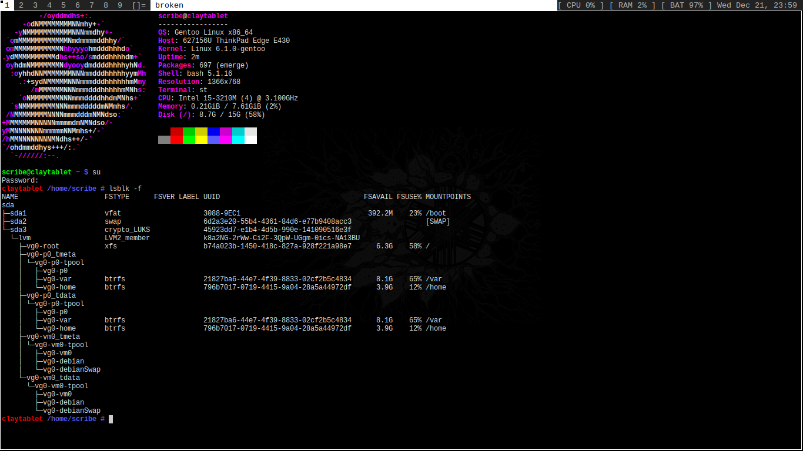
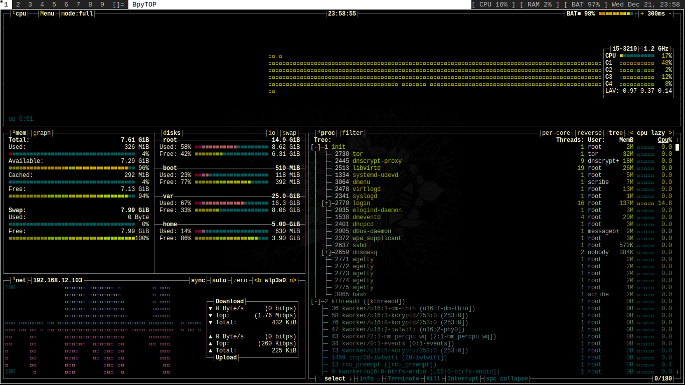

Under Construction
Skills: Self Taught
> Linux CLI > HTML/CSS > VirtualBox > libvirt/qemu (virt-manager) > LUKS disk encryption > LVM (Logical Volume Manager) > dnscrypt-proxy (encrypted dns and cache) > Android Debug Bridge > NGINX webserver > OpenSSH
This Website: Hard Coded, No Javascript
Linux Build From Source: Gentoo
Fresh Boot Idle: BPYTOP
Includes:
Hardened Kernel (compiled with necessary modules) LUKS '/' with LVM Dracut initramfs ZSTD compressed '/home' and '/var' LVM partitions/libvirt VMs DWM built with xorg-server ST patched with alpha and scrollback
View my system config files and more on github.
Under Construction